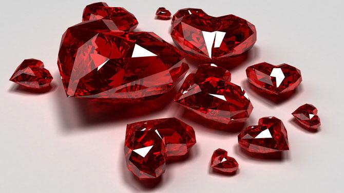
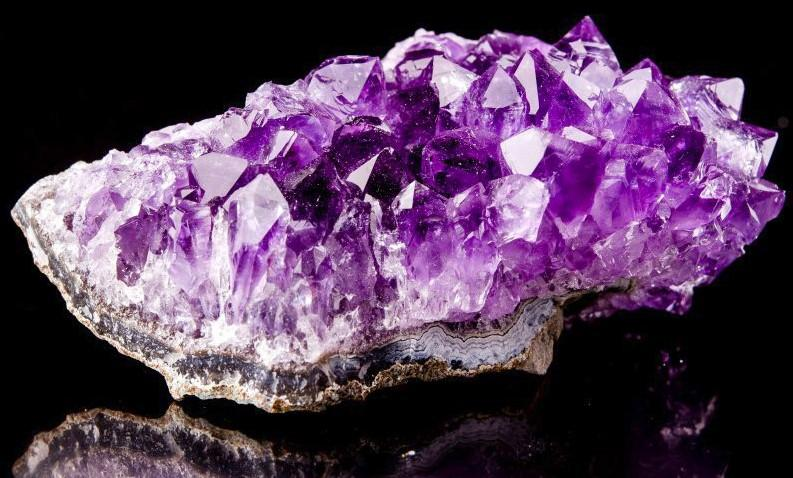
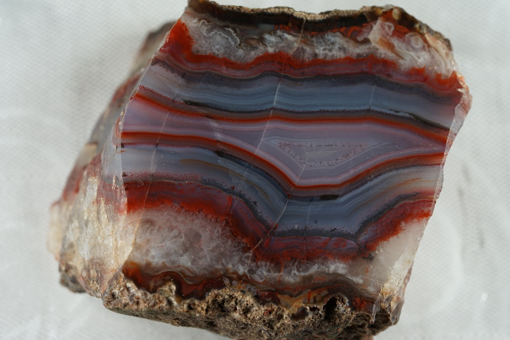
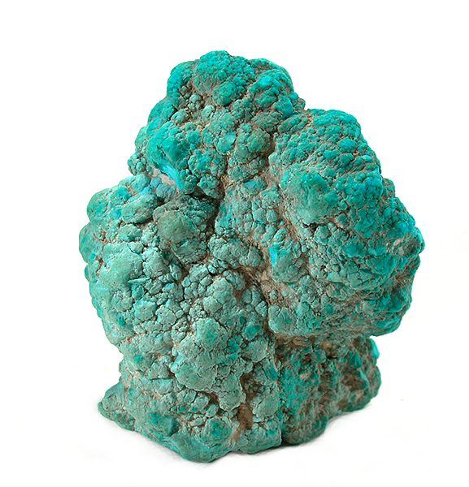
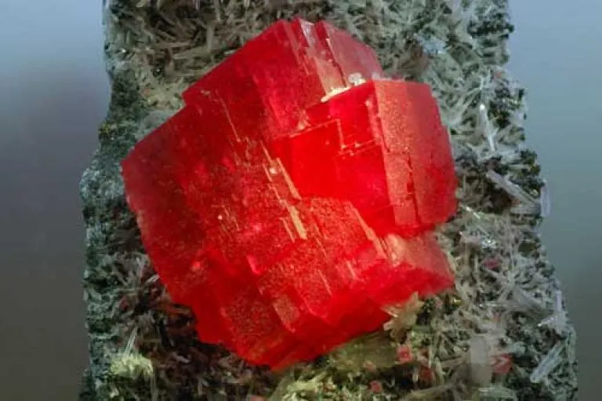

Бадмаараг

Танд тохиолдох таагүй зүйлийг зайлуулж хуурамч найз нөхөд, хараал жатгаас хамгаална.
Бадмаараг нь очир эрдэнийн дараа орох үнэтэй чулуу юм. Бадмаараг нь рубин-улаан гэсэн утгатай латин үгнээс гаралтай. Энэ үнэт чулуу индраанилтай адилхан нэг төрлийн хөнгөн цагааны ислээс бүрдсэн чулуу боловч индраанил хөх цэнхэр, бадмаараг улаан, улаан ягаан, ягаан өнгөтэй байна.
Read more
Болор

Ягаан болор бол кварц талстын нэг хэлбэр ба нил ягаан өнгөтэй. Загас болон Бумбын ордны шинж болох “УС” махбодтой холбоотой. Ягаан болорыг титэм чакратай холбоотой эмнэх үйл болох депресс, айдас, зан төлвийн эмгэг, стрессийг эмчлэхэд ашигладаг. Ид шидийн түвшинд бол энэхүү чулуу нь оюун бодлыг хурцалж, зөн бэлгийн хүч чадлыг сайжруулдаг.
Read more
Гартаам

Гартаам чулуу нь ерөнхийдөө хүрэн болон алтлаг өнгөтэй ба заримдаа олон үе давхаргатай байдаг. Тухайлбал чүнчигноровын төрлийн чулуунууд ногоон, цэнхэр өнгөтэй. “ШОРОО” махбодтой холбогдох гартаам чулуу нь нүдний хооронд байдаг мэлмий чакра буюу оюун ухаантай холбоотой. Тиймээс гартаамыг энерги, депресс, сэтгэцийн эрүүл мэндтэй холбоотой зүйлст ашиглаж болно.
Read more
Оюу

Тунамал гаралтай ашигт малтмалд хамаарах энэхүү чулуу нь үнэндээ зэс, хөнгөн цагааны нийлмэл фосфат юм. Зэсийн давс байгаа нь ийм баялаг, ер бусын өнгө өгдөг.
Агапит (агафит), араб чулуу, ацтек чулуу, номин шөрмөс, тэнгэрийн чулуу, каллейт (каллаис), туркиз, голдуу оюу нэрийн дор шатсан яс, шаазан эсвэл хуванцар зарагддаг байна. Ийм хуурамч зүйл нь ямар ч хиймэл чулуу шиг энергигүй байдаг.
Read more
Сувд

Сувд чулуу нь амьд байгалийн гайхалтай бэлэг бөгөөд газрын гүнд биш харин том усан сангийн (далай, тэнгис) ёроолоос олборлодог бөгөөд хүн төрөлхтний нийгэмлэг хэдэн мянган жилийн турш ашиглаж ирсэн бөгөөд хүндэлдэг. хамгийн ер бусын үнэт эдлэлийн хувьд.Сувд бол цэнгэг ус, давстай нялцгай биетний хясаанаас гаргаж авсан биоген эрдэнийн чулуу юм.
Түүний үүсэл нь нялцгай биетний гаднаас нэвтэрч, нөмрөгтөө орсон аливаа өдөөлтөд (хайрга, элсний ширхэг, бүрхүүлийн хэлтэрхий) үзүүлэх хамгаалалтын урвалын үр дүн юм.
Read more
Шүр

Хүн төрөлхтөн эрт дээр үеэс шүрийг муу муухайгаас хамгаалах ариун сахиус болгон хэрэглэж, тахин шүтэж ирсэн. Орчин үеийн үзмэрч мэргэд ч шүр нь айдас түгшүүр сарниулан, гэр бүлийн амьдралд эерэг сайнаар нөлөөлдөг гэж үздэг. Эрт цагаас уламжлагдан ирсэн энэхүү итгэл бишрэлийг одоо хэр хүүхдийн хүзүүнд шүр хэлхсэн зүүлт зүүлгэдгээс олж харж болно. Дурласан залуу сэтгэл алдарсан бүсгүйдээ хайрын анхны бэлэг сэлт болгон шүрэн зүүлт дурсгадаг байсан бөгөөд шүр нь бүсгүй хүний өнгө зүс, арьсанд таатай нөлөө үзүүлдэг гэж үзэж ирсэн.
Read more